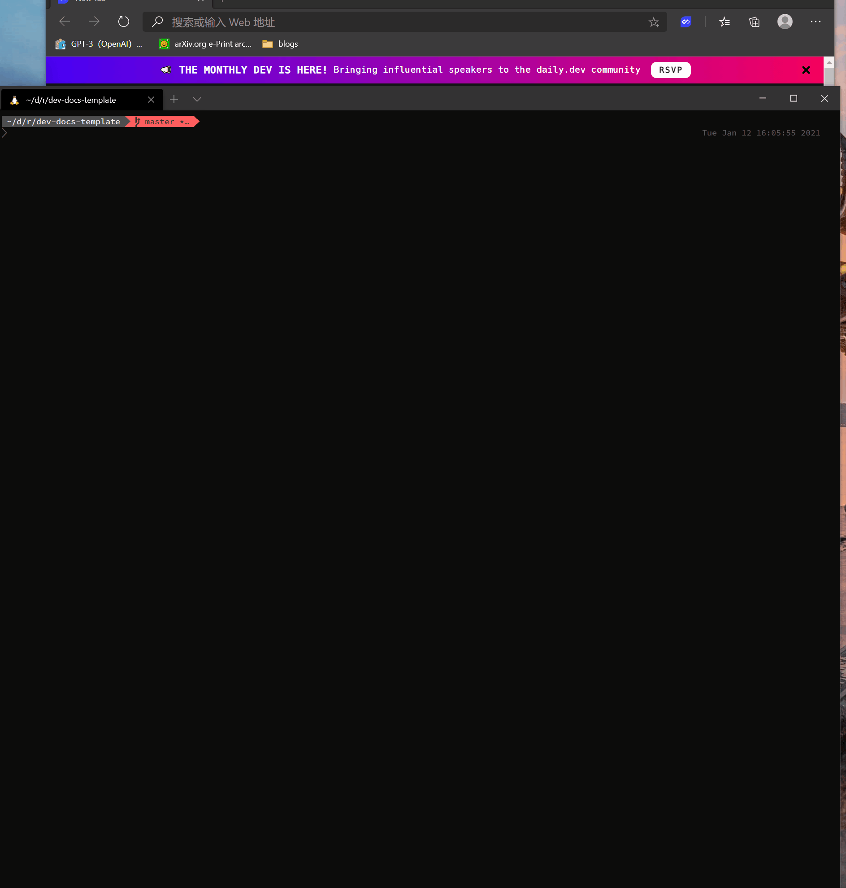

# Build Your Doc Sites
After editing docs in the VSCode Remote Container environment, you can build or preview your docs site with several ways.
# Preview Your Document Sites with Local Server
You can preview your document sites locally by running a docker container to host your markdown documents. Run this command:
make preview
Then a VuePress dev server will be started and listened at $VUEPRESS_PREVIEW_PORT port value defined in ./.env, default 8081)
And you can check the docs in a browser with the url localhost:$VUEPRESS_PREVIEW_PORT`.
After preview, stop by
make stop-preview

# Build Your Document Sites
Run this command:
make build
The built result is in $DOCS_RELATIVE_PATH/.vuepress/dist (defined in ./.env, default docs_src).
This result is also offlinified by ./docker/offlinify.js so that support file:// access, which means
that you can package $DOCS_RELATIVE_PATH/.vuepress/dist into a zip file and distributed it as an offline documentation. (Please noted that search is not support when using file:// access).
WARNING
Please noticed that current ./docker/offlinify.js only supports current directory structure. Please modify the js file when you use other VuePress theme or use untested directory structure.
# Export Your Site as a Single PDF File
make pdf
The built result is in $DOCS_RELATIVE_PATH/site.pdf (defined in ./.env, default docs_src).